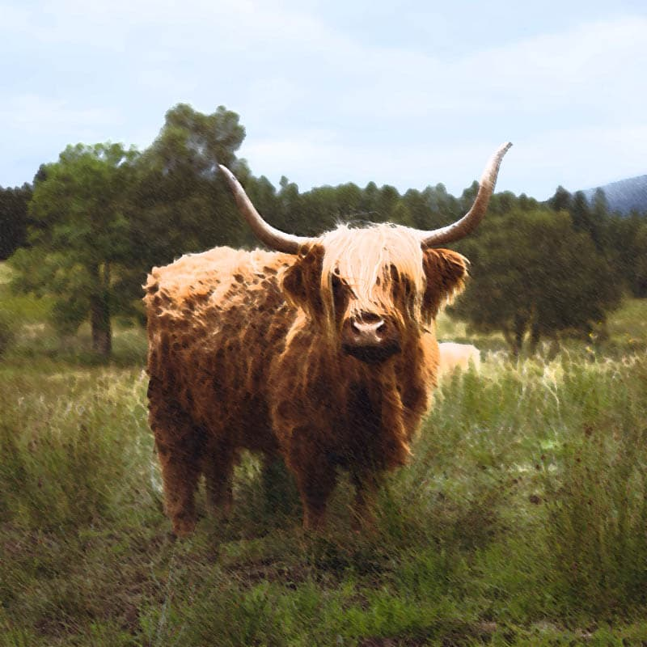
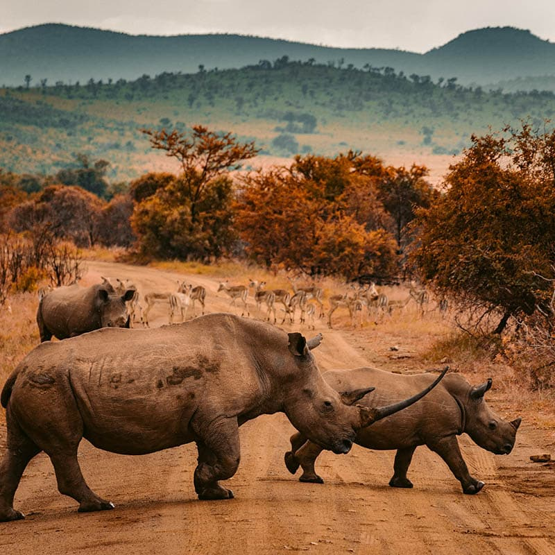
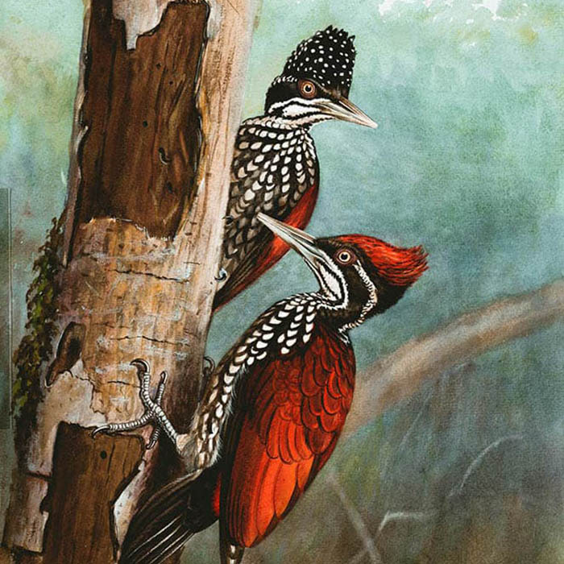
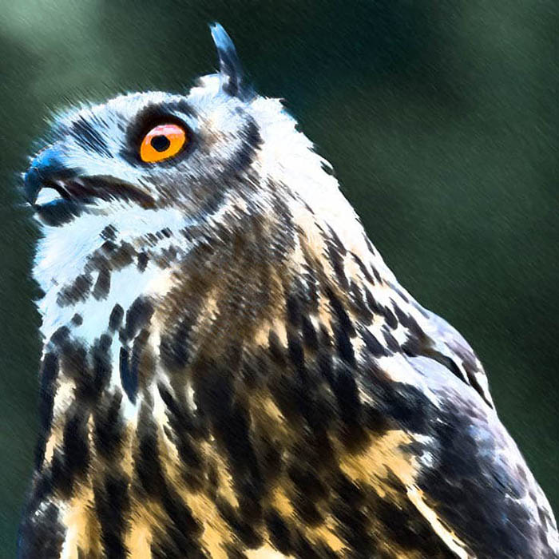
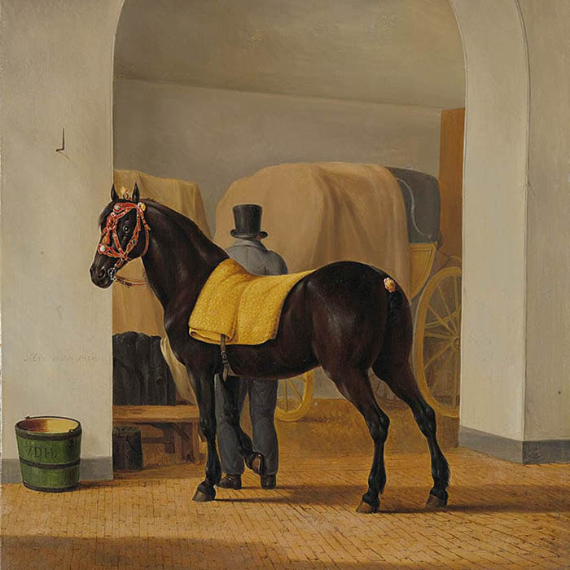
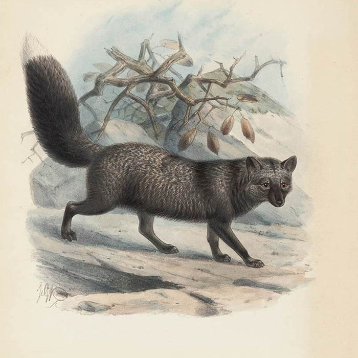
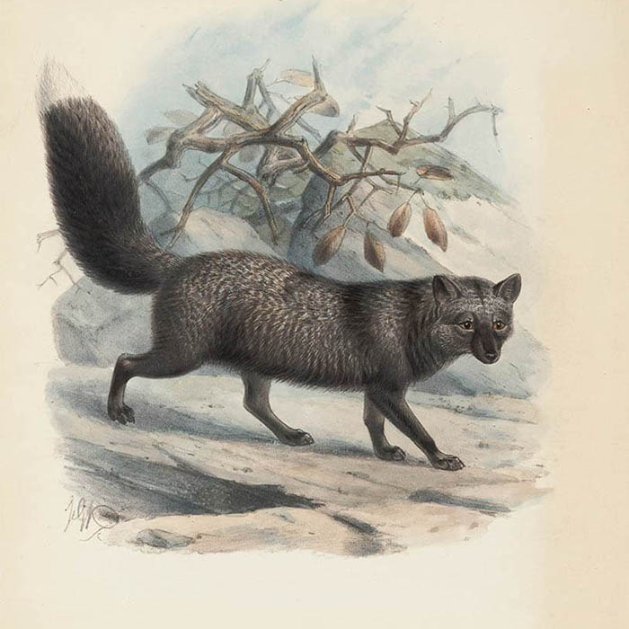
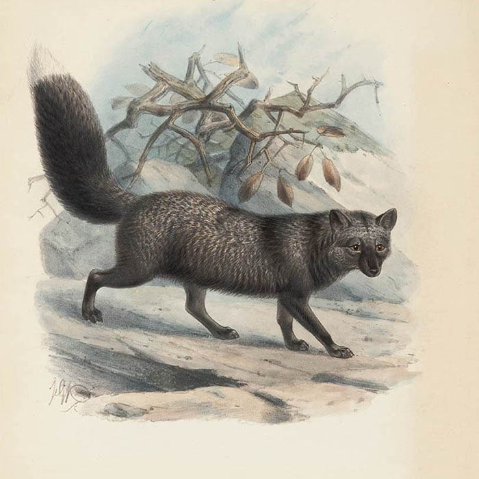
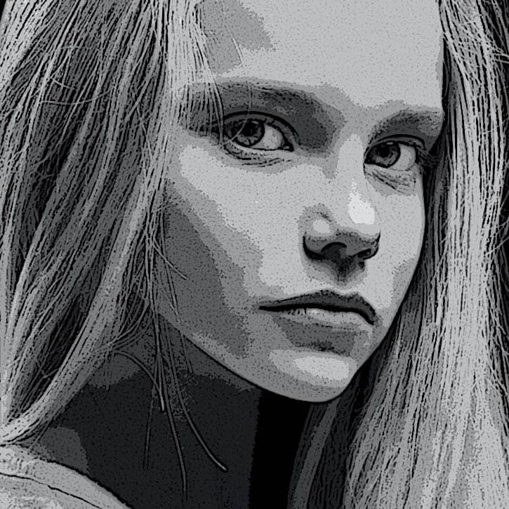

LIGHT FESTIVAL 2020
30 SIERPNIA - 7 PAŹDZIERNIKA
NOWE WYSTAWY
Fauna Afryki
Wystawa zainspirowana została dalekimi
wyprawami do środkowej Afryki. Umieszczenie
egzotycznych zwierząt na pierwszym planie,
sugestywne i dynamiczne sceny, nacisk na
prezencję bujnej flory to podstawowe cechy
ukazanych dzieł. Wpływ kultury Czarnego Lądu na
kształt malarstwa europejskiego osiągnął apogeum
w połowie XX wieku.
Tingatinga – pochodzący z lat 60. XX w. styl malarski Tanzanii. Nazwa wywodzi się od nazwiska Edwarda Saidiego Tingatingi. Przedstawicieli tego nurtu inspirowała fauna Afryki Wschodniej, szczególnie tzw. wielka piątka: słoń, hipopotam, żyrafa, lew, antylopa i ptak. Pierwsze przedstawienia tych zwierząt przypominają wizerunki sztuki naskalnej. Przypuszcza się, że wpływ na twórczość Tingatingi mogły mieć piktogramy pozostawione przez ludność Sandawe i Hadza. Obrazy tingatinga w swojej prostocie nawiązują do tych przedstawień.

Rysunek Jaka
James Garcia

Rysunek Sowy
Artistic Panda
Rysunek Pytona
Helena Forde

Rysunek Tukana
Helena Forde

Rysunek Nosorożca
Helena Forde
Rysunek Tygrysa
Helena Forde
Rysunek Ptaka
Helena Forde



 


Krajobrazy Ameryki Północnej
Malarstwo pejzażowe, zwane także sztuką
pejzażową, to przedstawianie naturalnych
scenerii, takich jak góry, doliny, drzewa, rzeki
i lasy, zwłaszcza tam, gdzie głównym tematem
jest szeroki widok - z jego elementami ułożonymi
w spójną kompozycję. W innych pracach tła
krajobrazowe dla postaci mogą nadal stanowić
ważną część pracy. Niebo prawie zawsze jest
uwzględnione w widoku, a często elementem
kompozycji jest pogoda.
Malarstwo pejzażowe, zwane także sztuką pejzażową, to przedstawianie naturalnych scenerii, takich jak góry, doliny, drzewa, rzeki i lasy, zwłaszcza tam, gdzie głównym tematem jest szeroki widok - z jego elementami ułożonymi w spójną kompozycję. W innych pracach tła krajobrazowe dla postaci mogą nadal stanowić ważną część pracy. Niebo prawie zawsze jest uwzględnione w widoku, a często elementem kompozycji jest pogoda. Szczegółowe krajobrazy jako odrębny przedmiot nie występują we wszystkich tradycjach artystycznych i rozwijają się, gdy istnieje już wyrafinowana tradycja reprezentowania innych tematów.
Portrety XX wieku
Malarstwo portretowe to gatunek w malarstwie,
którego intencją jest przedstawienie określonego
ludzkiego podmiotu. Termin „malarstwo
portretowe” może również opisać faktycznie
namalowany portret.
Historycznie, portrety upamiętniają przede wszystkim bogatych i wpływowych. Z biegiem czasu jednak stało się powszechne, że klienci z klasy średniej zamawiali portrety swoich rodzin i współpracowników. Dziś portrety są nadal zamawiane przez rządy, korporacje, grupy, kluby i osoby prywatne. Oprócz malarstwa portrety można wykonywać również w innych mediach, takich jak odbitki (w tym akwaforta i litografia), fotografia, wideo i media cyfrowe. Wydawać by się mogło oczywiste, że namalowany portret ma na celu uzyskanie podobizny siedzącej, która jest rozpoznawalna dla tych, którzy go widzieli, a najlepiej jest bardzo dobrym zapisem ich wyglądu. W rzeczywistości koncepcja ta rozwijała się powoli i minęły wieki, zanim artyści z różnych tradycji nabyli odrębne umiejętności malowania dobrego podobieństwa.

Rysunek czarnoskórego mężczyzny
Jance McAllen

Rysunek młodej dziewczyny
Françoise Nielly

Rysunek dziewczynki
Isabella Moravetz
Rysunek dziewczyny z kręconymi włosami
James Connor